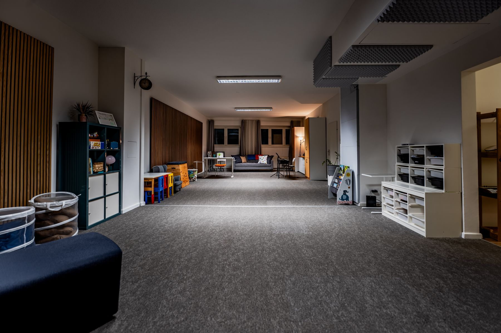
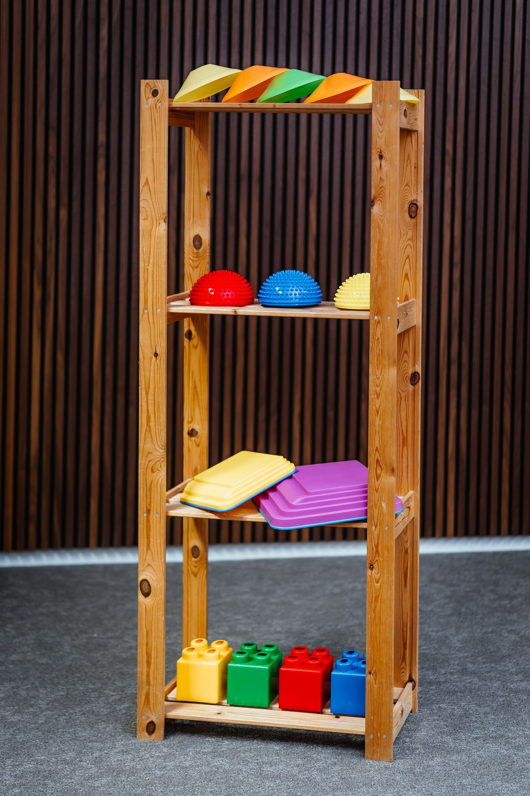
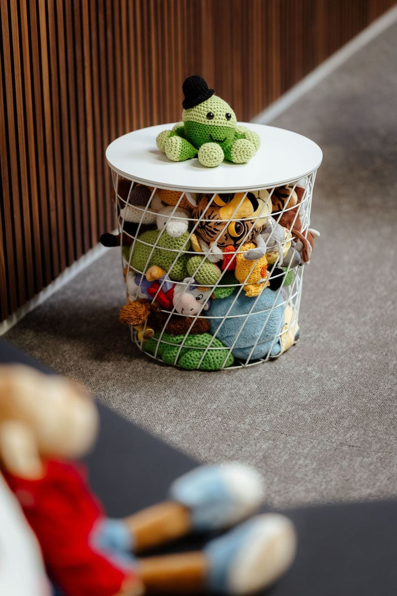
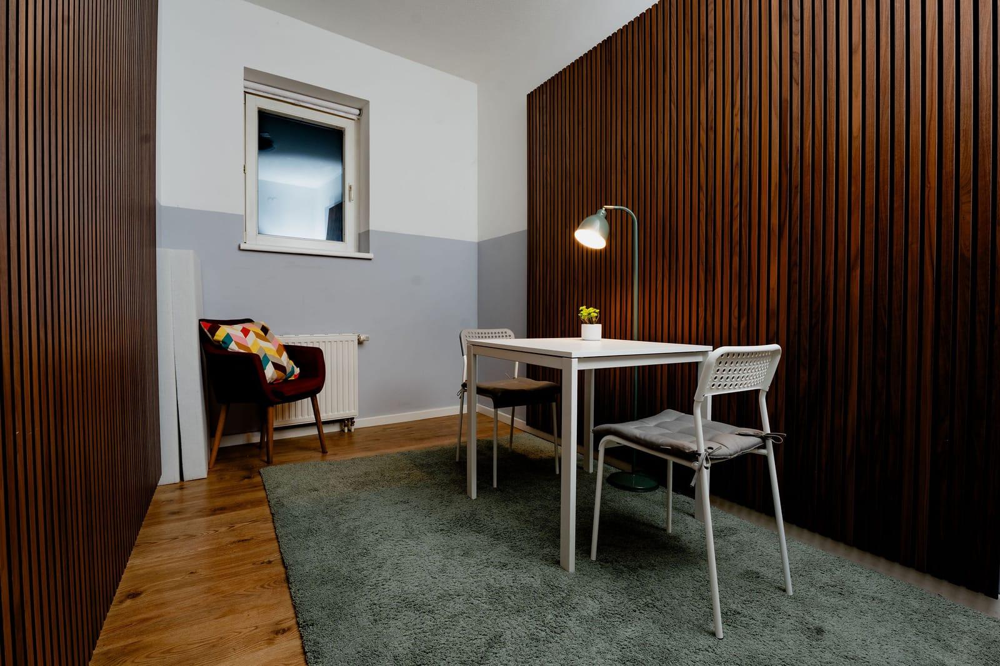
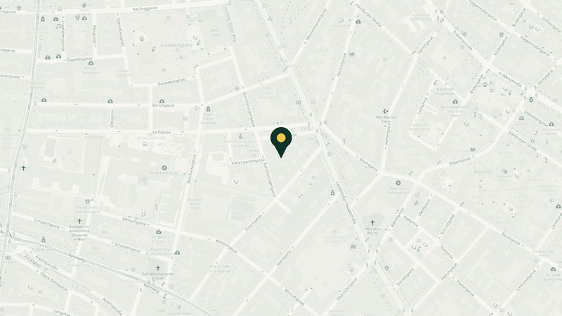

Über uns
Ein Ort, an dem niemand alles alleine schaffen muss.
Das Musiknest ist ein Co-Working-Space in Wien 1030, in dem Fachleute aus Therapie, Beratung und Pädagogik zusammenkommen. Hier klingt deine Arbeit richtig gut.

Warum es das Musiknest gibt
Aus einer Erfahrung im Kindergarten entstanden.
„In meiner Arbeit als Elementarpädagogin habe ich immer wieder erlebt, dass Bildungseinrichtungen viele Bedürfnisse von Kindern nicht abdecken können. Kinder, Eltern und Bezugspersonen brauchen oft mehr: die Unterstützung von Fachleuten und das Wissen, dass sie nicht alles alleine schaffen müssen. Aus diesem Gedanken ist das Musiknest entstanden.“
Alexandra Daniela Popa, Gründerin
Unser Leitbild
Wofür das Musiknest steht.
Sechs Sätze, die beschreiben, wie wir hier arbeiten. Für die Familien, die zu uns kommen, und für das Team, das hier arbeitet.
- 01
Niemand muss alles alleine schaffen
Kinder, Eltern und Bezugspersonen brauchen oft mehr als eine Einrichtung leisten kann. Im Musiknest finden sie Fachleute, die sich kennen und gemeinsam hinschauen. Und wer hier arbeitet, ist auch selbst nicht allein.
- 02
Mehrere Kompetenzen an einem Ort
Musiktherapie, Rhythmik, Kunsttherapie, Ergotherapie, Logopädie, psychologische Beratung und Coaching unter einem Dach. Wissen wird geteilt, Familien finden die passende Unterstützung an einem Ort.
- 03
Persönlich ausgewählt
Alexandra lernt jede Anbieterin und jeden Anbieter persönlich kennen und achtet darauf, dass jedes Angebot zum Musiknest passt. So entsteht eine Gemeinschaft, der man vertrauen kann.
- 04
Ruhige Räume für echte Arbeit
Zwei Räume mit Holz, Licht und guter Akustik: für Einzelsettings, Gespräche, Gruppen und Bewegung. Musik hat hier ihren Platz, in einem Maß, das Therapie und Beratung Ruhe lässt.
- 05
Potenzial entfalten
Alexandra liebt es, wenn Menschen ihr Potenzial ausleben. Das gilt für die Kinder und Familien genauso wie für die Fachleute, die hier ihre Selbstständigkeit aufbauen.
- 06
Für eine Welt, in der alle Platz haben
Der Leitsatz des Musiknests. Er steht über allem, was hier entsteht, heute im 3. Bezirk und in Zukunft auch darüber hinaus.
Interdisziplinär
Mehrere Kompetenzen an einem Ort.
Im Musiknest arbeiten Fachleute nebeneinander, die sonst in verschiedenen Praxen sitzen. Sie kennen einander, tauschen sich aus und können Familien weiterempfehlen, ohne dass diese von Tür zu Tür gehen müssen.
Eine Spezialisierung hat das Haus schon im Namen: Musiktherapie und elementares Musizieren mit Kindern. Offen ist das Musiknest aber für alle, die mit Kindern, Familien und Erwachsenen therapeutisch, beratend oder pädagogisch arbeiten.
- Musiktherapie
- Rhythmik
- Kunsttherapie
- Ergotherapie
- Logopädie
- Psychologische Beratung
- Coaching
- Elementarpädagogik

Leitung
Alexandra Daniela Popa
Gründerin und Geschäftsführerin
Ich bin Elementarpädagogin und Musikerin. Ich singe und spiele Saxophon, und ich liebe es, wenn Menschen ihr Potenzial ausleben.
Als Geschäftsführerin baue ich einen Ort auf, an dem Fachleute aus Musiktherapie, Rhythmik, Kunsttherapie, Ergotherapie, Logopädie, psychologischer Beratung und Coaching unter einem Dach arbeiten. Jede Anbieterin und jeden Anbieter lerne ich persönlich kennen, und ich achte darauf, dass jedes Angebot zum Musiknest passt.
Einblicke
So sieht es bei uns aus.




Was wir vorhaben
Das Musiknest soll wachsen.
Neben dem Musik- und Therapiezentrum im 3. Bezirk möchte Alexandra einen Kindergarten mit musikalischem Schwerpunkt aufbauen und einen Ort schaffen für Chor, Musical, Theater und Tanz. Der Leitsatz bleibt dabei derselbe:
„Für eine Welt, in der alle Platz haben.“

Barmherzigengasse 17/3/5, 1030 Wien
Neugierig? Melde dich!
Erzähl kurz, was du anbieten möchtest, dann lernen wir uns persönlich kennen. Du mietest schon bei uns? Dann melde dich an und buche deine Zeiten.